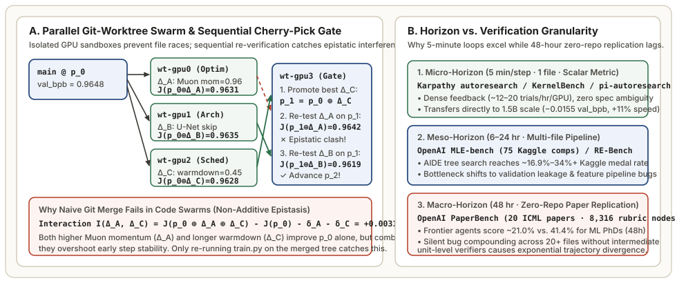

What You Will Learn in Chapter 06
- How to scale a single-GPU autoresearch loop to an $M$-GPU node using isolated
git worktreedirectories andCUDA_VISIBLE_DEVICESpinning without repository race conditions. - Why two individually beneficial patches $\Delta_A$ and $\Delta_B$ frequently degrade validation loss when merged together (**negative epistasis**), and how a **Sequential Cherry-Pick & Re-Verification Gate** guarantees monotonic progress on
main. - How the autoresearch pattern generalizes beyond neural network pretraining to arbitrary system metrics (`pi-autoresearch`, CUDA/Triton kernel synthesis on **KernelBench**, and **RankEvolve**).
- How to interpret modern autonomous research benchmarks—**MLE-bench**, **PaperBench**, **RE-Bench**, and **MLAgentBench**—and why dense intermediate verification is the mathematical boundary between high agent performance (~35% Kaggle medals) and trajectory collapse (~21% on 48-hour zero-repo paper replication).

git worktree swarm isolates specialist agents per GPU and routes winning patches through a Sequential Cherry-Pick Gate to eliminate epistatic regressions. Right: Agent success across research benchmarks is governed by verification granularity relative to trajectory horizon.1. Scaling from 1 GPU to $M$-GPU Git-Worktree Swarms
In Chapter 01, our single-GPU ratchet ran $\approx 11.4$ five-minute experiments per hour (~91 experiments in an 8-hour night). On an 8-GPU node ($M = 8$), we want $8\times$ the experimental throughput (~730 experiments/night) without executing distributed multi-GPU training for each tiny model. However, running 8 agents inside the same working directory immediately corrupts train.py and the Git index.
Rather than cloning the repository 8 times—which duplicates history and makes cross-agent commit exchange brittle—production multi-agent harnesses use git worktree. All $M$ worktrees share a single underlying .git/objects object database in constant disk space, while giving each GPU worker $m \in \{0, \dots, M-1\}$ its own isolated filesystem checkout and branch:
Further, instead of having all $M$ workers sample from the exact same proposal prior $\pi_\theta(\Delta \mid h_t, \mathcal{M}_t)$ (which causes parallel workers to redundantly test the same obvious learning-rate tweak in round 1), we partition the swarm into specialist roles via per-worker role suffixes in program.md:
- Worker 0 (Optimizer & Schedule Specialist): Restricted to modifying Muon/AdamW hyperparameters, momentum warmup/warmdown schedules, and per-parameter-group learning rates.
- Worker 1 (Architecture & Attention Specialist): Restricted to modifying residual connectivity, value embeddings, QK-norm, rotary frequencies, and MLP activations.
- Worker 2 (Initialization & Regularization Specialist): Restricted to modifying weight initialization scales, projection zero-inits, z-loss, and logit softcapping.
- Worker 3 (Integration & Ablation Gate): Dedicated to cherry-picking winning commits from Workers 0–2 onto
main, verifying epistatic compatibility, and running Occam's Razor complexity ablations.
2. Non-Additive Epistasis and the Sequential Cherry-Pick Gate
Suppose at the start of a 5-minute synchronized wave, Workers 0, 1, and 2 all branch from the same baseline commit $p_0$ with $J(p_0) = 0.9648\text{ val\_bpb}$. After 300 seconds, all three workers discover genuine improvements over $p_0$:
- Worker 0 finds patch $\Delta_A$ (increase Muon momentum $0.95 \to 0.965$): $J(p_0 \oplus \Delta_A) = 0.9631$ ($\delta_A = -0.0017$).
- Worker 1 finds patch $\Delta_B$ (add U-Net long skip connection from layer 2 to layer 7): $J(p_0 \oplus \Delta_B) = 0.9635$ ($\delta_B = -0.0013$).
- Worker 2 finds patch $\Delta_C$ (extend linear warmdown ratio $0.35 \to 0.45$): $J(p_0 \oplus \Delta_C) = 0.9628$ ($\delta_C = -0.0020$).
A naive swarm coordinator might run git merge to combine all three patches $\Delta_A \oplus \Delta_B \oplus \Delta_C$ into main—assuming that because they touch disjoint lines of train.py (clean textual merge), their validation improvements will sum linearly:
In deep learning, clean Git merges frequently exhibit strong epistatic interaction $\mathcal{I}(\Delta_A, \Delta_C)$:
When $\mathcal{I}(\Delta_A, \Delta_C) > |\delta_A|$, applying $\Delta_A$ on top of $\Delta_C$ makes the combined model worse than $p_0 \oplus \Delta_C$ alone! For example, higher Muon momentum ($\Delta_A$) and a shifted warmdown schedule ($\Delta_C$) both change the effective step size trajectory; together, they cause early gradient oscillation ($J(p_0 \oplus \Delta_C \oplus \Delta_A) = 0.9642 > 0.9628$).
- Immediately advance
mainto the single best already-verified commit: $p^{(1)} \leftarrow p_0 \oplus \Delta_{(1)}$, with $J(p^{(1)}) = J(p_0 \oplus \Delta_{(1)})$. (This requires zero extra GPU runs because $\Delta_{(1)}$ was already evaluated on $p_0$.) - For $j = 2, \dots, k$, attempt
git cherry-pickof $\Delta_{(j)}$ onto $p^{(j-1)}$. If the textual cherry-pick succeeds, run the out-of-process verifier on $p^{(j-1)} \oplus \Delta_{(j)}$ and accept if and only if: $$J\big(p^{(j-1)} \oplus \Delta_{(j)}\big) \;\le\; J\big(p^{(j-1)}\big) - \epsilon_{\text{min}}$$
3. Generalizing Autoresearch Beyond ML Training Loss
Nothing in the 3-file autoresearch formalism requires $J(p)$ to be a neural network validation loss. Any software engineering or scientific domain that satisfies three conditions can be driven by the exact same ratchet:
- Isolated Mutable Artifact ($p \in \mathcal{P}$): A bounded set of source files the agent is permitted to edit.
- Deterministic Correctness Gate ($C(p) \in \{0, 1\}$): A fast test suite or numerical equivalence check (e.g., `torch.allclose(y_ref, y_cand, atol=1e-3, rtol=1e-3)`).
- Low-Noise Scalar Objective ($J(p) \in \mathbb{R}$): A continuous metric executable in 10 seconds to 5 minutes.
| Domain / Harness | Mutable Target $p$ | Correctness Gate $C(p)$ | Scalar Objective $J(p)$ |
|---|---|---|---|
LLM Pretraining (karpathy/autoresearch) |
train.py (model + optimizer) |
No NaN/OOM, $T \le 300\text{ s}$ | Validation Bits-Per-Byte ($\text{val\_bpb}$) |
| GPU Kernel Synthesis (KernelBench, Ouyang et al., 2025) | Custom CUDA C++ / Triton kernel | Max abs error $\le 10^{-3}$ across 5 shapes vs. PyTorch reference | Median CUDA-event kernel latency ($\mu\text{s}$) / achieved TFLOP/s |
| Information Retrieval (RankEvolve, 2026) | BM25 / sparse-dense scoring formula | Valid probability / ranking axioms on sanity queries | $-\text{NDCG@10}$ across BEIR holdout benchmarks |
Systems / Compilers (pi-autoresearch) |
Hot-path parser, allocator, or SQL query planner | Full unit + property test suite passes ($100\%$) | P99 latency ($\text{ms}$) or peak RSS memory ($\text{MB}$) |
4. Benchmarking Autonomous Research Agents: MLE-bench vs. PaperBench
As autoresearch harnesses moved from hobbyist scripts to frontier-lab infrastructure, four major benchmark suites emerged to measure autonomous research capability across increasing time horizons and specification complexity:
- MLAgentBench (Huang et al., Stanford 2023): 13 repository-level ML experimentation tasks showing that agents reliably improve well-scaffolded baselines when runtime per trial is short, but struggle with open-ended debugging.
- RE-Bench (Wijk et al., METR 2024): 7 realistic ML research engineering environments (including scaling-law estimation, custom Triton kernel optimization, and restricted-compute language model training) comparing AI agents directly against 61 human ML experts across 2-hour to 32-hour budgets.
- MLE-bench (Chan et al., OpenAI 2024): 75 curated Kaggle competitions spanning tabular, computer vision, and NLP pipelines. Evaluates whether an autonomous scaffold (such as AIDE, SWE-agent, or OpenHands) achieves Bronze, Silver, or Gold human Kaggle leaderboard medals.
- PaperBench (Starace et al., OpenAI 2025): Evaluates whether an agent can replicate 20 Spotlight and Oral ICML 2024 papers from scratch given only the paper PDF/Markdown and an empty directory (zero starter repository).
Why Short-Horizon Tuning Excels While 48-Hour Zero-Repo Replication Lags
A striking empirical gap appears across these benchmarks:
- On RE-Bench at a 2-hour budget and on Karpathy's
autoresearch(5-minute trials), frontier agents with tree search or ratchet harnesses routinely match or beat human ML engineers, achieving $4\times$ faster progress per hour of wall-clock time on self-contained optimization loops. - On MLE-bench, pairing frontier models with the AIDE tree-search scaffold achieves 16.9% to 34%+ Kaggle medal rates—rising from 16.9% with a single 24-hour run to over 34% when scaling parallel seeds/trees.
- On PaperBench, however, even given a 48-hour compute budget, top frontier agents score roughly 21.0% on the hierarchical replication rubric, compared to 41.4% for human ML PhDs over the same 48-hour window.
We can explain this gap mathematically using Verifier Horizon Theory. Suppose a research task requires implementing $K$ coupled components (e.g., data preprocessing, custom loss, architecture, scheduler, evaluation script). Let $q \in (0, 1)$ be the probability that the agent implements a single component without a subtle semantic bug when no intermediate verifier exists for that component:
- In Karpathy's
autoresearch($K = 1$): Every 5 minutes, the agent modifies a single component ($K = 1$) against an already-working baseline and immediately receives an exact scalar reward $J(p)$. Even if $q = 0.25$ (75% of hypotheses fail or regress), after $N = 20$ trials the probability of finding at least one genuine improvement is $1 - (1 - 0.25)^{20} = 99.68\%$. - In OpenAI's PaperBench ($K \approx 25$ coupled modules from scratch): To score each replication faithfully, PaperBench decomposes 20 ICML papers into 8,316 hierarchical rubric nodes weighted across tree levels:
$$S_{\text{node}}(u) = \begin{cases} c(u) \in \{0, 1\} & \text{if } u \text{ is a leaf check (Code Development / Execution / Result Match)} \\[4pt] \displaystyle\frac{\sum_{v \in \text{children}(u)} w_v \, S_{\text{node}}(v)}{\sum_{v \in \text{children}(u)} w_v} & \text{if } u \text{ is an internal requirement node} \end{cases}$$When an agent writes 2,500 lines of code across $K = 25$ modules before running its first end-to-end experiment, even a per-module reliability of $q = 0.90$ yields an end-to-end correctness probability of $0.90^{25} \approx 7.2\%$. Worse, when the final table fails to match the paper's reported numbers, the agent faces a massive credit assignment problem: which of the 25 unverified modules contains the silent bug?
5. Reference Implementation: Parallel Git-Worktree Swarm Coordinator
Below is a complete, dependency-free Python 3 implementation of a multi-GPU git worktree swarm coordinator implementing Worker role specialization and the Sequential Cherry-Pick & Re-Verification Gate from Theorem 6.1:
from __future__ import annotations
from dataclasses import dataclass
from pathlib import Path
import subprocess
from typing import Callable, List
@dataclass(frozen=True)
class WorkerCandidate:
worker_id: int
role: str
commit_hash: str
description: str
solo_val_bpb: float
class GitWorktreeSwarmCoordinator:
"""
Manages M isolated git worktrees (one per GPU) and merges winning commits
onto `main` via a Sequential Cherry-Pick & Re-Verification Gate to prevent
non-additive epistatic regressions.
"""
def __init__(
self,
repo_root: Path,
worktree_base: Path,
num_gpus: int,
epsilon_min: float = 2e-4,
) -> None:
self.repo_root = repo_root.resolve()
self.worktree_base = worktree_base.resolve()
self.num_gpus = num_gpus
self.epsilon_min = epsilon_min
def _git(self, cwd: Path, *args: str) -> str:
res = subprocess.run(
["git", *args],
cwd=str(cwd),
capture_output=True,
text=True,
check=True,
)
return res.stdout.strip()
def setup_worktrees(self) -> List[Path]:
"""Creates or resets M isolated git worktrees synced to `main`."""
self.worktree_base.mkdir(parents=True, exist_ok=True)
main_sha = self._git(self.repo_root, "rev-parse", "main")
paths: List[Path] = []
for gpu_id in range(self.num_gpus):
wt_dir = self.worktree_base / f"wt-gpu{gpu_id}"
branch = f"worker/gpu-{gpu_id}"
if not wt_dir.exists():
self._git(
self.repo_root,
"worktree",
"add",
"-B",
branch,
str(wt_dir),
main_sha,
)
else:
self._git(wt_dir, "checkout", "-B", branch, main_sha)
self._git(wt_dir, "reset", "--hard", main_sha)
paths.append(wt_dir)
return paths
def sequential_cherry_pick_wave(
self,
baseline_bpb: float,
candidates: List[WorkerCandidate],
verify_fn: Callable[[Path, int], float],
gate_gpu_id: int = 0,
) -> float:
"""
Applies Theorem 6.1:
1. Filters candidates that beat baseline_bpb - epsilon_min on their own.
2. Promotes the single best candidate directly to `main` (0 extra GPU runs).
3. Sequentially cherry-picks remaining winners and re-verifies on gate_gpu_id
to reject negative epistatic interactions.
"""
winners = [
c for c in candidates
if c.solo_val_bpb <= baseline_bpb - self.epsilon_min
]
if not winners:
return baseline_bpb
# Sort ascending by solo_val_bpb (lowest/best first)
winners.sort(key=lambda c: c.solo_val_bpb)
# Step 1: Fast-forward main to the single best already-verified candidate
best = winners[0]
self._git(self.repo_root, "checkout", "main")
self._git(self.repo_root, "reset", "--hard", best.commit_hash)
current_best_bpb = best.solo_val_bpb
# Step 2: Sequentially test remaining candidates for epistatic compatibility
for cand in winners[1:]:
head_before = self._git(self.repo_root, "rev-parse", "HEAD")
try:
self._git(self.repo_root, "cherry-pick", "--no-Edit", cand.commit_hash)
except subprocess.CalledProcessError:
# Textual merge conflict -> abort cherry-pick and skip
self._git(self.repo_root, "cherry-pick", "--abort")
continue
combined_bpb = verify_fn(self.repo_root, gate_gpu_id)
if combined_bpb <= current_best_bpb - self.epsilon_min:
current_best_bpb = combined_bpb
else:
# Epistatic regression detected -> rollback to head_before
self._git(self.repo_root, "reset", "--hard", head_before)
return current_best_bpb6. Series Synthesis: The 5 Pillars of an Autoresearch Harness
Across all six chapters of this series, we have traced how a single-GPU overnight script evolves into a general-purpose autonomous discovery engine:
- Chapter 01 (The Ratchet & Metric): Isolate mutable code (
train.py) from immutable evaluation (prepare.py) and optimize a representation-invariant, time-boxed objective ($\text{val\_bpb}$ at $T_{\text{budget}} = 300\text{ s}$). - Chapter 02 (Search Topology): Replace greedy $(1+1)$-ES hill-climbing with UCT tree search and explicitly distinct
Draft,Debug, andImproveoperators (AIDE & AI Scientist v2) to cross epistatic valleys. - Chapter 03 (ACI & Context Economics): Program the proposal distribution via
program.md, redirect noisy stdout (`> run.log 2>&1`), compact trajectory memory viaresults.tsv, and enforce an Occam's Razor complexity penalty $\lambda_{\text{comp}} \cdot \text{LOC}(\Delta)$. - Chapter 04 (Population Evolution): Maintain island models and MAP-Elites quality-diversity grids with multi-parent `SEARCH/REPLACE` diffs (FunSearch & AlphaEvolve) to combine orthogonal breakthroughs.
- Chapter 05 (Hardened Verification): Run the verifier in a fresh OS process with SHA-256 integrity checks, `torch.cuda.synchronize()` barriers, and Bonferroni-corrected holdout gates to defeat Goodhart's Law.
- Chapter 06 (Multi-GPU Swarms & Horizons): Scale across $M$ GPUs using
git worktreespecialization and a Sequential Cherry-Pick Gate to eliminate epistatic merge conflicts.